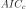
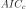
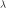

ARMA process estimation¶
 or a range of orders
or a range of orders  ,
where
and
,
where
and ![Ind_q = [q_1, q_2]](../../_images/math/6b1391363b584a186b5a0c651d37542e9ce41221.svg) , the methods aims to find the best model
, the methods aims to find the best model
 that fits the data and estimate the
corresponding coefficients. The best model is considered with
respect to the  criteria (corrected Akaike Information
Criterion), defined by:
that fits the data and estimate the
corresponding coefficients. The best model is considered with
respect to the  criteria (corrected Akaike Information
Criterion), defined by:where
is half the number of points of the time grid of the process sample (if the data are a process sample) or in a block of the time series (if the data are a time series).
Two other criteria are computed for each order :
the AIC criterion:
and the BIC criterion:
, the estimation of the coefficients
, and the
variance  is done using the Whittle estimator which is
based on the maximization of the likelihood function in the frequency
domain..
Using the notation ([dim1]), the spectral density function of the
process writes:
is done using the Whittle estimator which is
based on the maximization of the likelihood function in the frequency
domain..
Using the notation ([dim1]), the spectral density function of the
process writes:(1)¶
where and  is the frequency value.
The Whittle log-likelihood writes:
(2)¶
where:
is the non parametric estimate of the spectral density, expressed in the Fourier space (frequencies in
![[0,2\pi]](../../_images/math/62463b22f3ec72cd74add0f200e76eb8f73199a0.svg) instead of ). By default the Welch estimator is used.
instead of ). By default the Welch estimator is used.is the Fourier frequency, , with
the largest integer .
We estimate the scalar coefficients by maximizing the log-likelihood function. The corresponding equations lead to the following relation:
(3)¶
where  maximizes:
maximizes:
(4)¶
The Whitle estimation requires that:
the determinant of the eigenvalues of the companion matrix associated to the polynomial are outside the unit disc,, which garantees the stationarity of the process;
the determinant of the eigenvalues of the companion matrix associated to the polynomial are outside the unit disc, which garantees the invertibility of the process.
Multivariate estimation
 be a multivariate
time series of dimension
be a multivariate
time series of dimension  generated by an ARMA process
where are supposed to
be known. We assume that the white noise
generated by an ARMA process
where are supposed to
be known. We assume that the white noise  is
distributed according to the normal distribution with zero mean and
with covariance matrix
is
distributed according to the normal distribution with zero mean and
with covariance matrix
 where
where
 .
. ,
then
,
then  is normal with zero mean. Its covariance matrix
writes
which depends on the coefficients
is normal with zero mean. Its covariance matrix
writes
which depends on the coefficients  for
and and on the matrix
for
and and on the matrix
 .
.The likelihood of writes:
(5)¶
where
 ,
and where
,
and where  denotes the determinant.
denotes the determinant.
The difficulty arises from the great size () of which is a dense matrix in the general case. [mauricio1995] proposes an efficient algorithm to evaluate the likelihood function. The main point is to use a change of variable that leads to a block-diagonal sparse covariance matrix.
The multivariate Whittle estimation requires that:
the determinant of the eigenvalues of the companion matrix associated to the polynomial are outside the unit disc, which guarantees the stationarity of the process;
the determinant of the eigenvalues of the companion matrix associated to the polynomial are outside the unit disc, which guarantees the invertibility of the process.
API:
See
WhittleFactorySee
WelchFactorySee
ARMA
Examples: